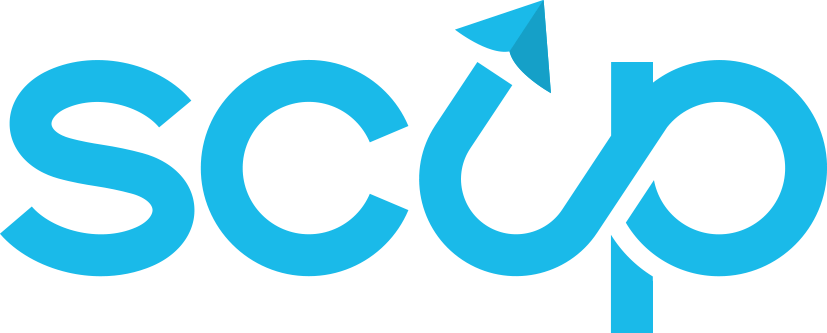

10 felvételi pluszpont
Ha sikeresen teljesítitek a SCUP Schoolt és határidőre beadjátok a projekteteket, minden csapattag 10 SZTE Junior Akadémia felvételi pluszpontot szerezhet.
Projektfejlesztő kurzus a Szent-Györgyi Tanulmányi Versenyhez

A SCUP Schoolban saját, innovatív projektet dolgoztok ki egy valós, mindennapjainkat érintő tudományos problémára. A projektet személyes csapatmeetingeken keresztül építitek: kiválasztjátok a problémát, kialakítjátok a megoldást, megtervezitek a megvalósítást, majd elkészítitek és beadjátok a pályázati anyagot. A Szent-Györgyi Tanulmányi Verseny adja ehhez a keretet és a célt; közben megtanuljátok, hogyan válik egy ötletből valódi projekt.
Ha sikeresen teljesítitek a SCUP Schoolt és határidőre beadjátok a projekteteket, minden csapattag 10 SZTE Junior Akadémia felvételi pluszpontot szerezhet.
A beadott projektek közül a 10 legjobban teljesítő csapat jut be a Szent-Györgyi Tanulmányi Verseny szóbeli döntőjébe.
A hét modul egymásra épül: minden új szakaszban továbbviszitek azt, amit korábban létrehoztatok. Az ajánlott befejezési időpontok abban segítenek, hogy egyenletesen haladjatok, és az utolsó napokra már csak a véglegesítés és a beadás maradjon.
Haladjatok sorrendben, és mindig azt a modult nyissátok meg, amelyiken éppen dolgoztok.
Kiválasztjátok azt a tudományos témát, amelyből közösen elindítjátok a projekteteket.
A tág témából kiválasztotok egy konkrét problémát, amelyre a projekteteket építitek.
Több lehetséges irányból kiválasztjátok azt a projektötletet, amelyet közösen továbbfejlesztetek.
A projektötletből működő tervet készítetek, és végiggondoljátok a megvalósítás feltételeit.
Kidolgozzátok a projekt részleteit, és elkészítitek a pályázati adatlap végleges tartalmát.
A kész projektből meggyőző bemutatást építetek: elkészítitek a pitchet, a onepager első változatát és a vizuális irányt.
Befejezitek és ellenőrzitek a teljes pályázati csomagot, majd határidőre beadjátok.
A kurzus működésével és felépítésével kapcsolatos általános információk.
A kurzus határidői és a beadáshoz kapcsolódó információk.
Opcionális segítség a projektmunka során felmerülő helyzetekhez.
Válaszok a kurzus szervezésével, működésével és technikai használatával kapcsolatos kérdésekre.